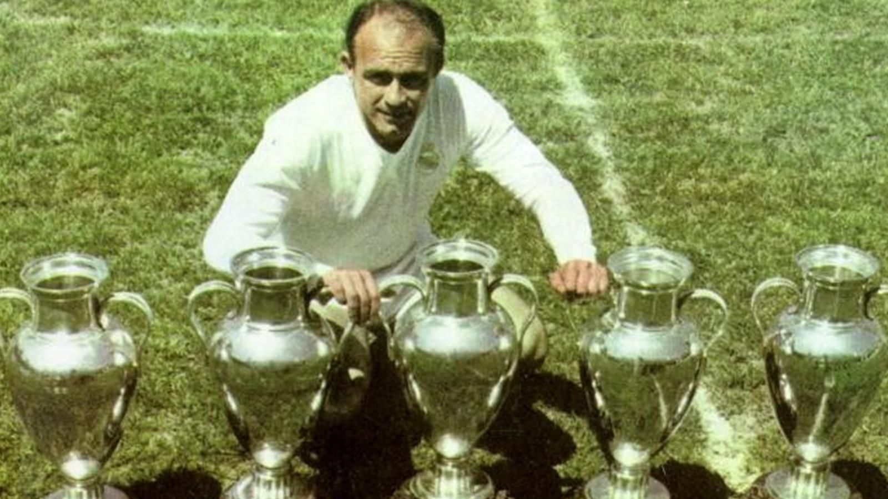

ألفريدو دي ستيفانو
1953 · 1964
ألفريدو دي ستيفانو
1953 · 1964
المركز في الملعب: مهاجم
عدد المباريات التي خاضها: 510 مباراة رسمية
عدد الأهداف المسجلة: 418 هدفا
المباريات الدولية مع اسبانيا: 31 مباراة
أفضل لاعب كرة قدم في تاريخ ريال مدريد. كان يهاجم، وكان يدافع وكان يقوم بذلك على أكمل وجه. ذات شخصية قيادية داخل الميدان وخارجه؛ بلغ نادي ريال مدريد برفقته عصره الذهبي. وكان إنجازه لخمسة كأس أوروبية متتالية حدث أذهل الساحة الدولية لكرة القدم. وحصل دي ستيفانو على جائزتي الكرة الذهبي في العامين (1957 و1969) كممثل لفريق من الأحلام.
وخاض دي ستيفانو أول مباراة رسمية له في فريق (ريفر بلات) بالأرجنتين بعمر 19 عاما ونصب بطلا وأكبر هداف في الدوري بعمر 21 عاما. لكن اضرابا عاما في كرة القدم الأرجنتينية دفع باللاعب الفذ الى الهجرة الى كولومبيا التي حقق فيها انتصارات بقميص فريق (مليوناريوس) واستقطب جميع الأنظار وأثار اهتمام جميع الفرق ومن بينها ريال مدريد وبرشلونة الذين دخلا في معمعة للحصول على خدمات البرازيلي وحصل النادي الملكي على أثمن الجواهر.
الفوز! تلك كانت الكلمة الوحيدة في قاموس اللاعب الارجنتيني – الاسباني، وكانت مسيرته في الفريق الملكي مليئة بالنجاحات، حيث أحرز ثمانية عشر لقبا في احدى عشرا موسما سجل فيها 308 هدفا رسميا ليتحول بذلك الى رمز، الى اسطورة مدريدية. وكان أداؤه في نهائيات كأس أبطال أوروبا -التي سجل هدفا واحدا على الأقل في كل منها-مباريات تاريخية لا تنسى.
مهمينا بشكل كامل على كرة القدم الاسبانية والاوربية، كان ريال كان يدور حول الشخصية الفذة لألفريدو دي ستيفانو الذي منح الجنسية الاسبانية وشارك مع المنتخب الوطني في 31 مباراة رغم أنه لم يستطع المشاركة في أي مباراة نهائية في أي بطولة دولية.
وفي عهده كمدير فني في النادي الملكي، فتح دس ستيفانو الباب لجيل من اللاعبين الذي شكلوا لاحقا حقبا تاريخية في النادي. وسيطر بوتراغينيو و سانتشيز ومارتين وبازكيز وبارديزا Butragueño, Sanchís, Martín Vázquez y Pardeza على الفريق الأول مع دي ستيفانو، لينضم اليهم لاحقا كل من ميتشل وامانثيو.
وكانت بداياته كمدرب في (Boca Juniors) الذي غزا معه اللقب المحلي وكأس الارجنتين. وعاد بعد ذلك الى اسبانيا ليتولى قيادة فريق (فالنسيا) الذي حقق معه الدوري المحلي في عام 1971، وبعد ان كان خاض تجارب مع فرق مختلفة مثل (سبورتينغ) البرتغالي، و(رايو فايكانو) و(كاستيون) وعاد الى (فالنسيا) وقاده للفوز بكأس الكؤوس الأوروبية عام 1980.
وأتم الارجنتيني في عام 1982 أول مراحله في ريال مدريد، حيث عمل خلال موسمين على إعادة تشكيل الفريق وبلغ معه وصافة خمس منافسات. وفي نوفمبر عام 1990 عاد للظهور ليحل مكان توشاك Toshack. واستمر في المنصب مدة خمسة أشهر كانت مدة كافية لتحقيقه هكذا ترك ترك بصمة خالدة في النادي الذي شغل رئاسته الفخرية لغاية وفاته في 7 يوليو 2014.
5 كأس أوروبا
1 كأس الانتركونتيننتال
2 كؤس اللاتينية
1 كأس العالم المصغرة
8 القاب الدوري الاسباني
1 كأس اسبانيا
5 جوائز البيتشيتشي للمواسم (1953/54، 1955/56, 1965/57، 1957/58 و 1958/59).
1 كأس السوبر الاسباني